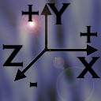
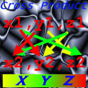

Ok so here it starts... with the coordinate system. You probably know that in 2-D, we
usually use René Descartes's Cartesian System to identify a point on a flat surface. We
use two coordinates, that we put in parentheses to refer to the point: (x, y) where x
is the coordinate on the horizontal axe and y on the vertical one. In 3 dimensions,
we add an axe called z, and usually we assume it represents the depth. So to
represent a point in 3D, we use three numbers: (x, y, z). Different cartesian 3D
systems can be used. But they are all either Left-Handed or Right-Handed. A
system is Right-Handed when pointing your index in the positive Y direction and
your thumb in the positive X direction, your fingers are curled toward the positive Z
direction. On the other hand, (hehe) a system is Left-Handed when your fingers are curled
toward the negative Z direction. Actually, you can rotate these systems in any directions
and they will keep these caracteristics. In computer graphics, the typical system is the
Left-Handed so we'll use it too. So for us:

What is a vector exactly? In a few words, it's a set of coordinates... But if you get into more specific details, a vector can be a lot more. Let's start with a 2D vector, of the form (x, y): so let's talk about the vector P (4,5). (Usually, we put some weird arrow with only one side on top of the P, so it looks more like a hook). We can say that the vector P represent the point (4,5), or more likely that it is an arrow pointing from the origin to the point (4,5), having a specific direction and length. By the way, when we're talking about the length of a vector (also called the module), we talk about the distance from the origin to the point, and it's noted | P |. We compute the length of a 2D vector with the formula:
| P | = sqrt( x2 + y2 )
Here's an interesting fact: In 1D (where a point is on a single axe), the square root of the square of a number corresponds to its absolute value, whence the | | symbol for the absolute value's notation.
Now let's jump to 3D vectors: our friend will be P(4, -5, 9). The length will be:
| P | = sqrt( x2 + y2 + z2 )
and it is represented by a point in Cartesian 3D space, or rather by an arrow pointing from the origin of the system to the point. We'll learn more about vectors when we'll talk about operations.
I'll try to make this clear and simple at first: a matrix is a
two-dimensional array of numbers Probably all matrices we'll use in this site we'll be 4
by 4. Why 4 by 4? Because we are in 3 dimension and because we need an additional
column and an additional row to make the calculations work. In 2D we would need 3x3
matrices. This means that in 3D, you have 4 numbers horizontally, and 4 vertically, 16 in
total. Look at a sample matrix:
| 1 | 0 | 0 | 0 |
| 0 | 1 | 0 | 0 |
| 0 | 0 | 1 | 0 |
| 0 | 0 | 0 | 1 |
It's called the identity matrix, because when another matrix is multipled by this one, it isn't changed in any way. Now, just for fun, here's another example of what a matrix can look like:
| 10 | -7 | 22 | 45 |
| sin(a) | cos(a) | 34 | 32 |
| -35 | 28 | 17 | 6 |
| 45 | -99 | 32 | 16 |
So you've found all you've read here pretty easy and are wondering when you will learn something? Or you're even asking yourself what is the link between all this information and 3D graphics? Here everything changes, you will now learn facts that are the foundation of 3D transformations and of a lot of other concepts. It's still mathematical stuff though... We'll talk about operations on Vectors and Matrices: the sum and different type of products. Let's start with the addition of two vectors:
( x1 , y1 , z1 ) + ( x2 , y2 , z2 ) = ( x1 + x2 , y1 + y2 , z1 + z2 )
Quite simple heh? Now the product of a scalar by a vector:
k · ( x, y, z ) = ( kx, ky, kz )
Now a trickier one, called the dot product, doesn't get a vector as a result: ( x1 , y1 , z1 ) · ( x2 , y2 , z2 ) = x1x2 + y1y2 + z1z2 Actually, the dot product of two vectors divided by the product of their modules, corresponds to the cosine of the angle between the vectors. So:
cos (V ^ W) = V · W / ( | V |* | W | )
Note that the "^" doesn't mean exponent this time, but the angle between the
vectors! This application of the dot product can be used to compute the angle of a light
with a plane so it will be discussed in greater details in the section about Shading.
Now a very weird one, the cross product.

( x1 , y1 , z1 )
X ( x2 , y2 , z2 ) = ( y1z2 - z1y2
, z1x2 - x1z2 , x1y2 - y1x2
)
The cross product is very useful to compute the normal of a plane.
Ok, we've finished with the vectors. I'll begin with the sum of two
matrices. It's pretty straightforward and similar to the sum of two vectors, so I won't
write a big formula here. For every i which is a row in the matrices, and for every j
which is a column in the matrices, you simply add the term (i, j) of the second matrix to
the term (i, j) of the first one. I could write some big formula with weird looking big
sigma symbols but I don't want to... We'll rather move to the most important principle in
matrices, concerning 3D transformations: the product of two matrix. I will point right now
the fact that M x N * DOESN'T *
equal N x M. So here is the equation for multiplying two matrices, this time with the
sigmas. You probably won't understand anything if you don't already know the principle,
but it will get clear when you'll see the code in the tutorial about 3D transformations.
Here it is:
A 4x4 matrix multiplication formula
If A=(aij)4x4 and B=(bij)4x4,
then
A x B=
4 |
4 |
4 |
4 |
4 |
4 |
4 |
4 |
4 |
4 |
4 |
4 |
4 |
4 |
4 |
4 |
And if AxB=(cik)4x4 then we can write this on one line:
cik = S4, j=1 aijbjk
Now you should be able to try multiplying some matrix by an identity matrix to understand how it works. Then after all these separated discussions about vectors and matrices, we's multiply them together! So here's the formula to multiply a 3D vector by a 4x4 matrix (you should already have guessed that the result will be another 3D vector), if B=(bij)4x4:
( a1, a2, a3 ) x B = (Saibi1 + b4,1, Saibi2 + b4,2, Saibi3 + b4,3 )
with 3, i=1 as parameters for the sums.
That's it for the operations on vectors and matrices! It's getting harder, heh? From now on, the link between the code and the maths will be more visible, with transformations...
You've surely already seen formulas like:
t( tx, ty ): ( x, y ) ==> ( x + tx, y + ty )
This was the equation of a translation in a 2D Cartesian system. Now let's check the scaling equation:
s( k ): ( x, y ) ==> ( kx, ky )
Makes sense heh? A much harder one, the rotation, where trigonometry makes its entry in 3D graphics:
r( q ): ( x, y ) ==> ( x cos(q) - y sin(q), x sin(q) + y cos(q) )
These were for 2D, but in 3D they stay pretty much the same. You simply add the coordinate z and the parameter tz for the translation. For the scaling, you simply multiply z by k (or you can use three diffrent scalings for every coordinates, like in the scaling matrix below). For the rotation, you keep the same formula, let z stays the same, and it gives you the rotation around the z axis. Because two other rotations are added in 3D (around the x and y axis). I could write all this 3D transformation the same way I did in 2D, but instead we'll use a much cleaner way, (that will show you the point of all this chapter) vectors and matrices! So you have your vector ( x, y, z ) as above in 2D, and several matrices of trasformation, one for each type. Then we will multiply the matrices by the vector and the resulting vector will be pointing to the transformed point. (In the next chapter, we will multiply every matrices together, to get what we will called the global transformation matrices, then multiply it by the source vector to get the destination in only one operation!). So let's show you all these 3D transformation matrices:
| 1 | 0 | 0 | 0 |
| 0 | 1 | 0 | 0 |
| 0 | 0 | 1 | 0 |
| tx | ty | tz | 1 |
| sz | 0 | 0 | 0 |
| 0 | sy | 0 | 0 |
| 0 | 0 | sx | 0 |
| 0 | 0 | 0 | 1 |
| 1 | 0 | 0 | 0 |
| 0 | cos(q) | sin(q) | 0 |
| 0 | -sin(q) | cos(q) | 0 |
| 0 | 0 | 0 | 1 |
| cos(q) | 0 | -sin(q) | 0 |
| 0 | 1 | 0 | 0 |
| sin(q) | 0 | cos(q) | 0 |
| 0 | 0 | 0 | 1 |
| cos(q) | sin(q) | 0 | 0 |
| -sin(q) | cos(q) | 0 | 0 |
| 0 | 0 | 1 | 0 |
| 0 | 0 | 0 | 1 |
So this concludes the part about transformations. You can apply any transformation to a 3D point with these matrices. In the next chapter, we will implement the code for matrices, vectors and for transforming 3D points. But before moving to the coding part, I want to discuss a bit planes and normals...
A plane is a flat, infinite surface, oriented in a specific direction. You can define a plane with the famous equation:
Ax + By + Cz + D = 0
where A, B, C are what we called the normals of the plane, and D is the distance from the plane to the origin. So what is a normal? It's a vector perpendicular to a plane. We compute the normal of a plane by doing the cross products of the two edges of the plane. To define these edges, we need three points. If P1 is our fisrt point, P2 our second, and P3 our third, and if they are counter-clockwise, treating them as vectors we can write:
Edge1 = P1 - P2
and
Edge2 = P3 - P2
and then compute the normal:
Normal = Edge1 X Edge2
What about the D component of the equation? We simply isolate D, plot the values of any of the three point in the equation, and we get it:
D = - (Ax + By + Cz)
or
D = - (A·P1.x + B·P1.y + C·P1.z)
or even trickier:
D = - Normal · P1
But to compute the A, B, C components (because sometimes, we need themselves, not the normals), you can simplify all these operations with these equations:
A = y1 ( z2 - z3
) + y2 ( z3 - z1 ) + y3 ( z1 - z2
)
B = z1 ( x2 - x3 ) + z2 ( x3 - x1
) + z3 ( x1 - x2 )
C= x1 ( y2 - y3 ) + x2 ( y3 - y1
) + x3 ( y1 - y2 )
D = - x1 ( y2z3 - y3z2 ) - x2
( y3z1 - y1z3 ) - x3 ( y1z2
- y2z1 )